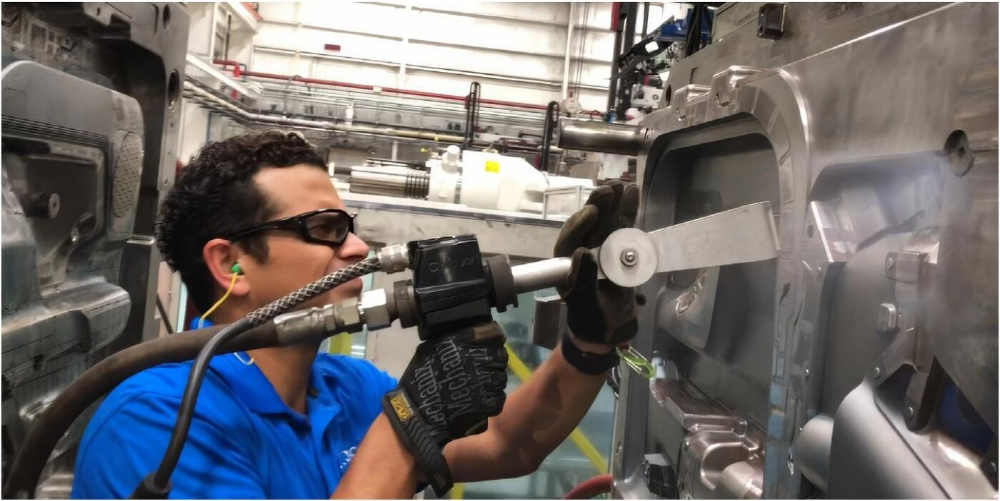
드라이아이스 세척의 원리, 장점, 자주 묻는 질문을 한 곳에 정리했습니다.
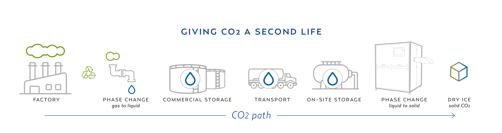
한 번 배출된 CO2를 그대로 버리는 대신, 다시 산업에 활용할 수 있는 자원으로 전환합니다.
드라이아이스는 재활용된 CO2를 사용하기 때문에 탄소발자국 산정 시 CO2가 사용 단계에서 다시 계산되지 않습니다. CO2는 생산자 단계에서 이미 산정됩니다.
— California Air Resources Board (캘리포니아 대기자원위원회)
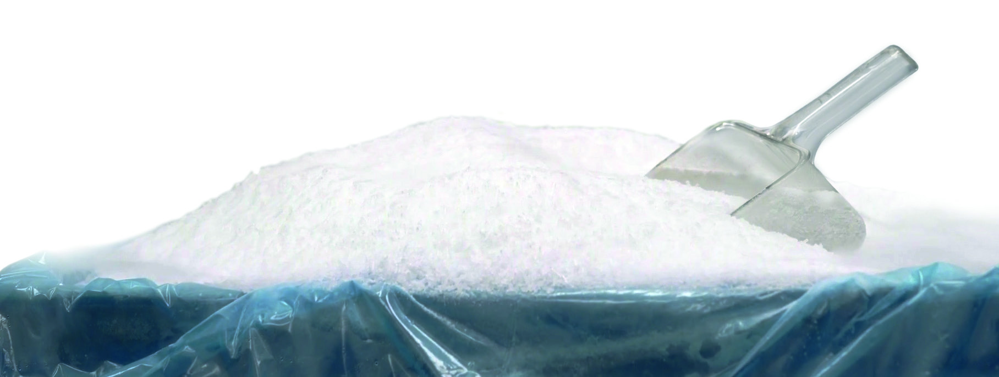
드라이아이스는 새로운 CO2를 만들어 사용하는 것이 아니라, 이미 포집된 CO2를 다시 활용하는 순환형 자원입니다.
세정 과정에서는 물이나 화학 세정제를 사용하지 않으며, 드라이아이스 자체는 사용 후 다시 기체로 승화합니다. 이러한 특성은 물 사용과 2차 폐기물 발생을 줄이는 산업 세정 방식으로 이어집니다.
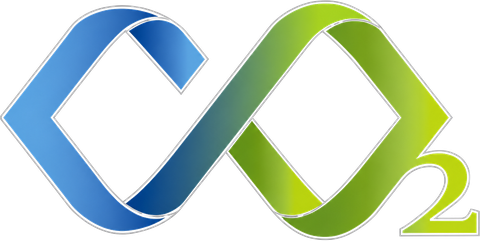
회수된 CO2를 다시 가치 있는 자원으로.
드라이아이스는 탄소를 순환시키는 또 하나의 방법입니다.
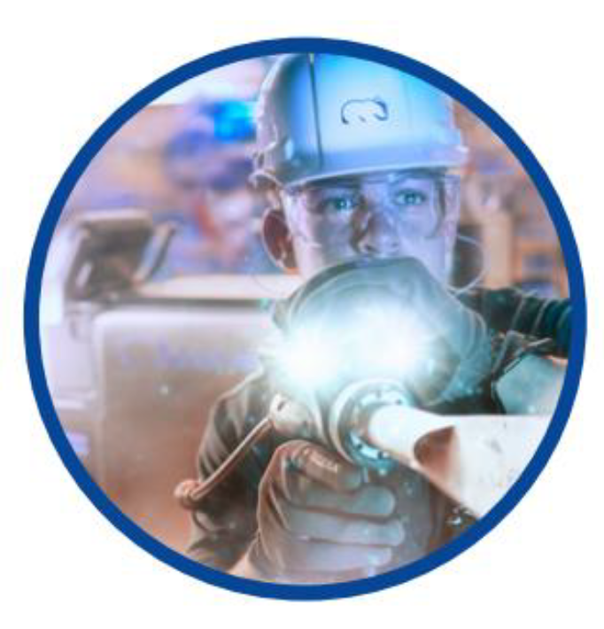
화학물질이나 연마제를 사용하지 않고, 드라이아이스 펠렛을 이용하여 표면을 세척하는 방법입니다.
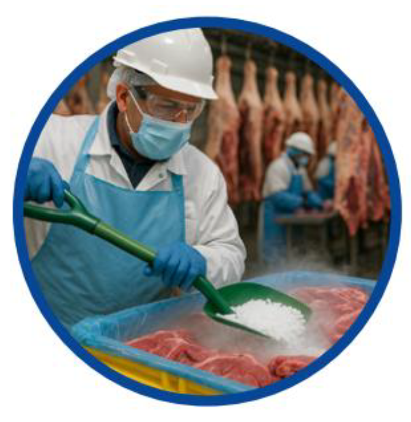
드라이아이스는 일반 얼음보다 훨씬 낮은 온도를 가지며, 물기를 남기지 않기 때문에 냉동식품, 의약품 등 온도에 민감한 물품을 운송할 때 냉매로 활용됩니다.
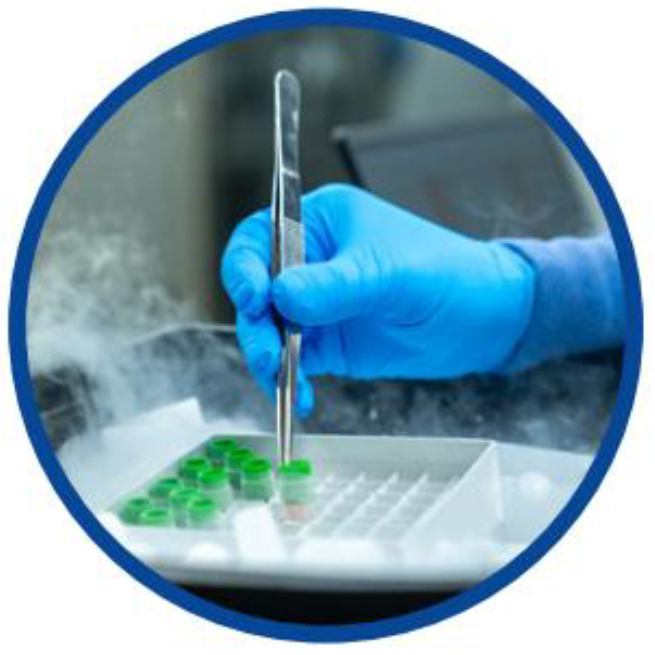
드라이아이스는 시료를 냉동하거나, 정확하게 제어된 저온 환경을 조성하기 위해 연구실에서 사용됩니다.
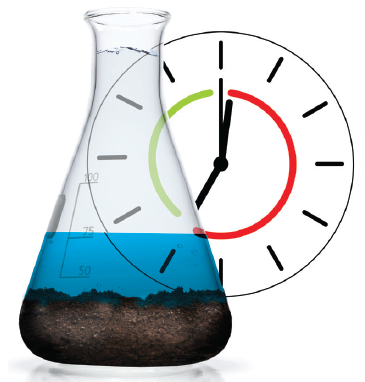
생산 중단 → 냉각 → 분리 → 이송 → 세척 → 이송 → 재설치 → 재가열 → 생산 재개
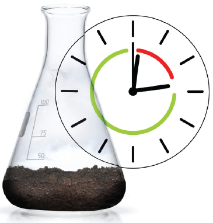
생산 중 온라인 세척
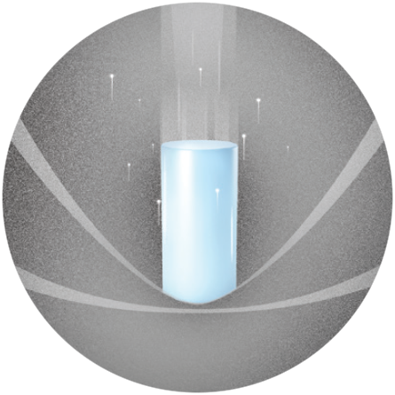
I충격(Impact)으로 운동 에너지 효과가 발생합니다. 부드러운 드라이아이스가 특수 설계된 노즐을 통해 압축공기로 초음속까지 가속됩니다. 운동 에너지는 선택한 입자 크기와 분사 압력으로 제어되며, 드라이아이스가 오염물에 충돌해 미세 균열을 만듭니다.
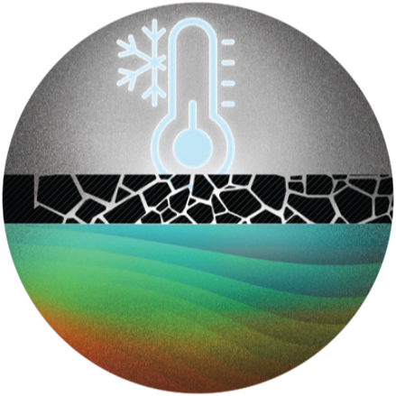
C드라이아이스 펠렛의 저온(Cold)이 열 효과를 만듭니다. 드라이아이스의 온도(-78.5°C)는 오염물을 취성화(부서지기 쉽게)시켜 모재와 오염물 사이의 결합을 끊는 데 도움을 줍니다. 열 효과의 기여도는 체류 시간·이동 속도와 드라이아이스 공급량 설정에 따라 달라집니다. 이 세정 효과로 이미 미세 균열이 생긴 오염물이 수축하며 모재와의 결합력을 잃게 됩니다.
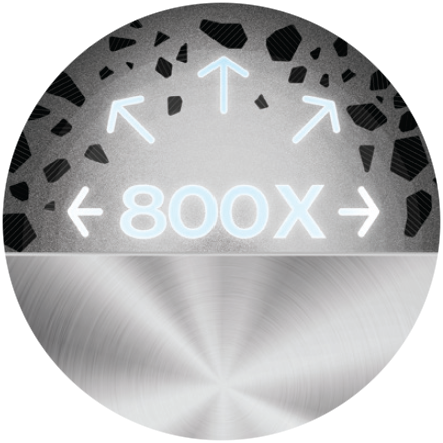
E드라이아이스 펠렛의 팽창(Expansion)입니다. 펠렛은 충돌 즉시 승화하며 부피가 800배로 팽창해, 오염물을 안쪽에서부터 밀어내어 제거(블라스팅)합니다.
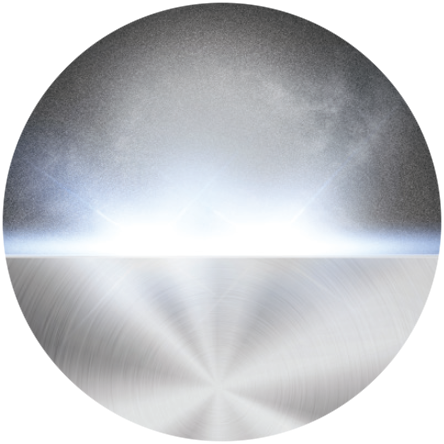
드라이아이스는 비마모성이며 기체로 변해 사라지기 때문에, 깨끗한 표면만 남아 금형의 수명을 연장시킵니다.
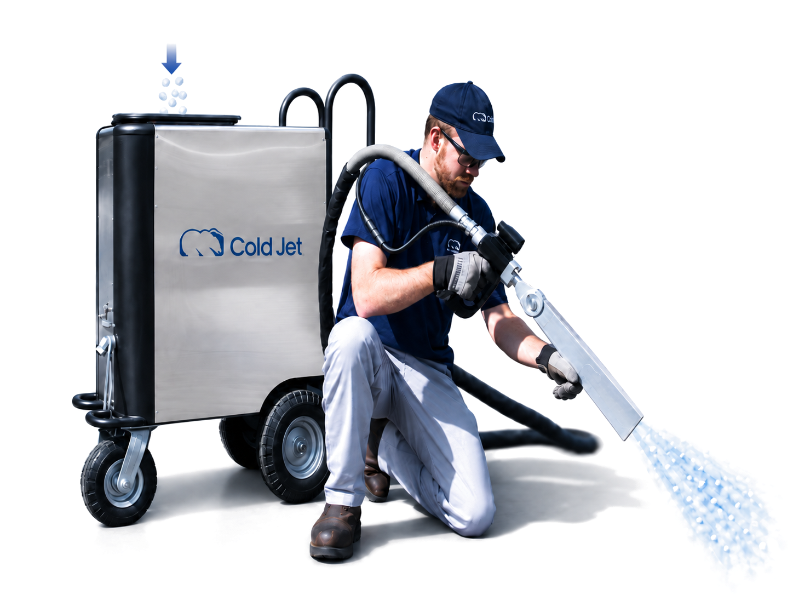
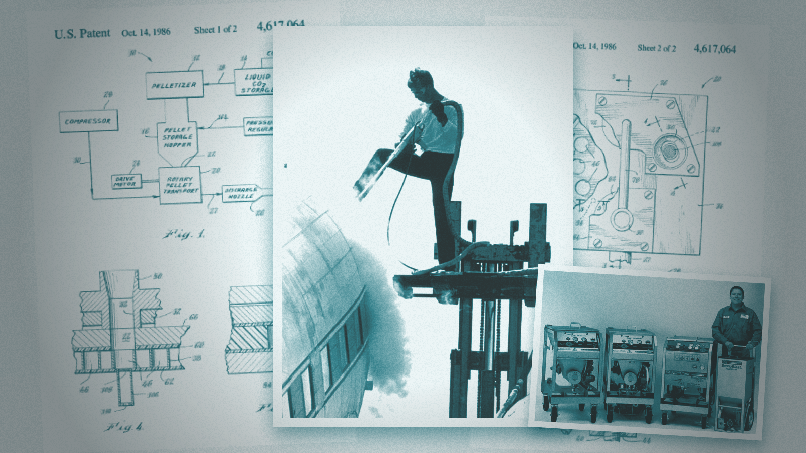
콜드젯(Cold Jet)은, 1986년 최초의 드라이아이스 블라스터를 개발했으며, 1989년에는 산업용 드라이아이스 블라스터 관련 최초 특허를 확보하며 본격적인 기술 상용화의 기반을 마련했습니다.
이후 Cold Jet는 단순한 분사 장비를 넘어 드라이아이스 입자 제어, 노즐 설계, 정밀 세정, 자동화 및 공정 통합 기술을 지속적으로 개발하며 드라이아이스 블라스팅의 적용 범위를 확대해 왔습니다.
드라이아이스 블라스터는 금형, 생산설비, 주조·자동차·전자·반도체 등 다양한 산업 현장에서 사용되며, 먼지와 오염, 장시간 운전 등 비교적 가혹한 조건에 노출되는 경우가 많습니다. 따라서 단순한 세정력뿐 아니라 장비의 내구성, 장시간 운전 시 성능 안정성, 유지보수성과 부품 공급 체계까지 중요한 선택 기준이 됩니다.
Cold Jet는 이러한 산업 환경을 고려해 견고한 프레임 구조, 고품질 스테인리스 부품, 정밀하게 설계된 공압 시스템을 적용하고 있으며, 장시간 연속 운전에서도 안정적인 세정 성능을 유지하도록 설계되어 있습니다. 이러한 성능과 내구성은 전 세계 다양한 산업 현장에서 축적된 적용 경험을 통해 검증되어 왔습니다.
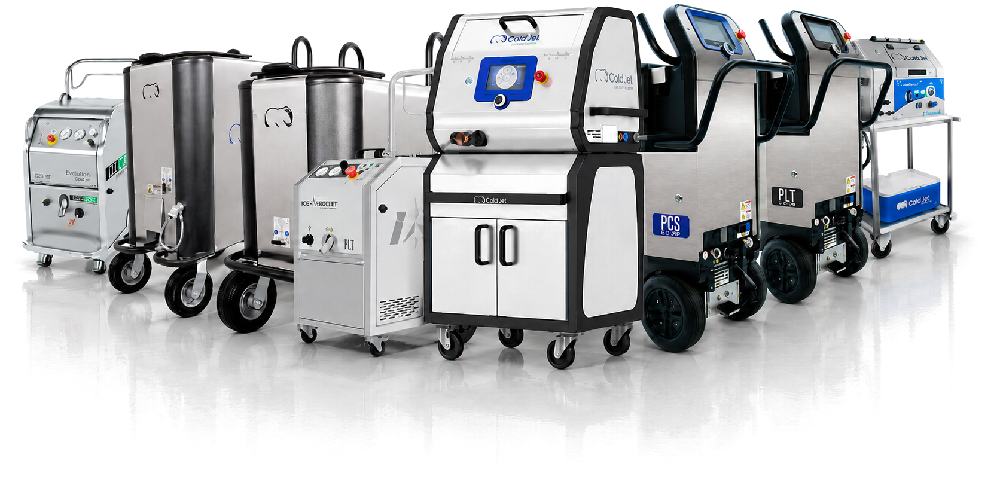
드라이아이스 세척을 처음 검토하실 때 가장 많이 받는 질문을 정리했습니다.
보관은 가능하지만, 드라이아이스는 시간이 지나면서 고체에서 기체로 승화하여 양이 줄어들고 품질도 떨어집니다. 따라서 장기간 보관하기보다는 필요한 시점에 공급받아 가급적 빠르게 사용하는 것이 좋습니다.
바테크에서는 드라이아이스 보관을 위한 스티로폼 박스와 드라이아이스 전용 보냉용기도 판매하고 있습니다. 일반적으로 스티로폼 박스에 보관할 경우 하루 약 5~10%, 단열 성능이 높은 드라이아이스 전용 보냉용기의 경우 약 2~5% 정도의 승화 손실이 발생할 수 있습니다. 다만 실제 손실률은 외부 온도, 드라이아이스의 양과 크기, 용기의 단열 성능, 개폐 횟수 등에 따라 달라집니다.
드라이아이스는 승화하면서 CO₂ 가스가 발생하므로 완전히 밀폐된 용기에 보관해서는 안 됩니다.
드라이아이스 세척에는 일반적으로 직경 3mm의 드라이아이스 펠렛을 사용합니다.
Cold Jet의 마이크로파티클(MicroParticle) 시스템은 3mm 펠렛을 미세하게 절단하여 0.3mm부터 3.0mm까지 0.1mm 간격으로 입자 크기를 조절할 수 있습니다. 세척 대상의 재질과 오염 정도에 따라 입자 크기를 세밀하게 설정할 수 있어 정밀 부품부터 강한 세척력이 필요한 산업용 설비까지 폭넓게 적용할 수 있습니다.
기본적으로 드라이아이스 세척기, 드라이아이스, 압축공기, 전원이 필요합니다.
필요한 압력과 공기량은 사용하는 장비와 노즐, 세척 대상에 따라 달라집니다. 또한 작업 중 드라이아이스가 CO₂ 가스로 승화하므로 충분한 환기가 필요하며, 작업 환경에 맞는 보호장비와 안전수칙을 준수해야 합니다.
모든 오염물을 제거할 수 있는 것은 아닙니다. 드라이아이스 세척은 기름, 그리스, 이형제, 접착제, 수지, 잉크, 먼지 및 각종 생산 잔여물 등 다양한 오염물 제거에 효과적이지만, 오염물의 종류와 부착 정도, 세척 대상의 재질에 따라 세척 결과가 달라질 수 있습니다.
특히 소재 내부까지 깊게 진행된 녹이나 표면 자체를 깎아내야 하는 경우에는 연마재를 사용하는 다른 세척 방식이 더 적합할 수 있습니다. 적용 가능 여부가 확실하지 않다면 실제 샘플 테스트를 통해 세척 가능 여부와 적합한 조건을 확인하는 것이 가장 정확합니다.
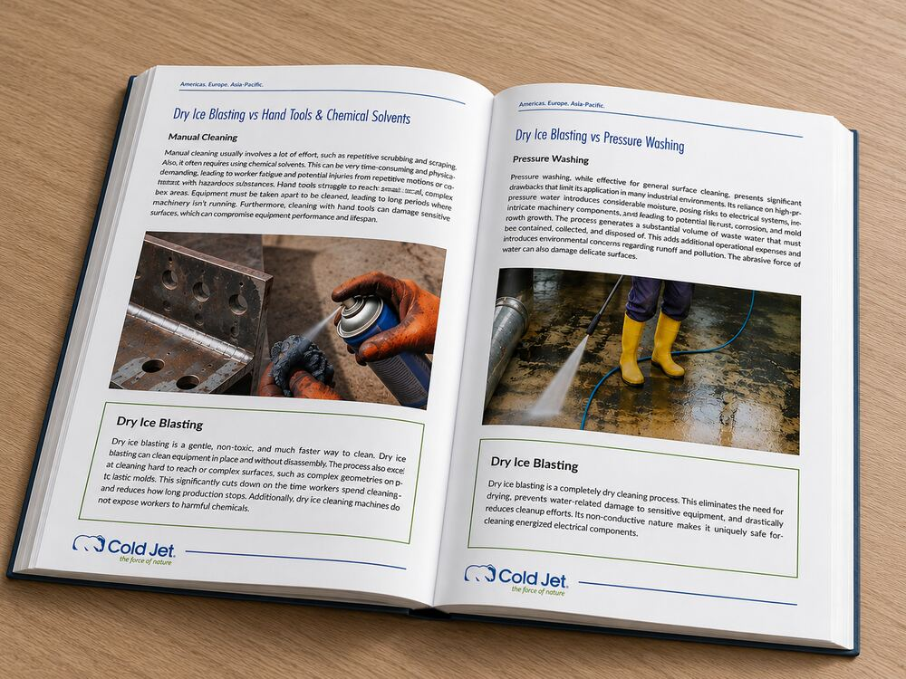
연마재·화학용제·고압세척 등 기존 방식과 드라이아이스 세척의 차이를 비교합니다.
자세히 보기 →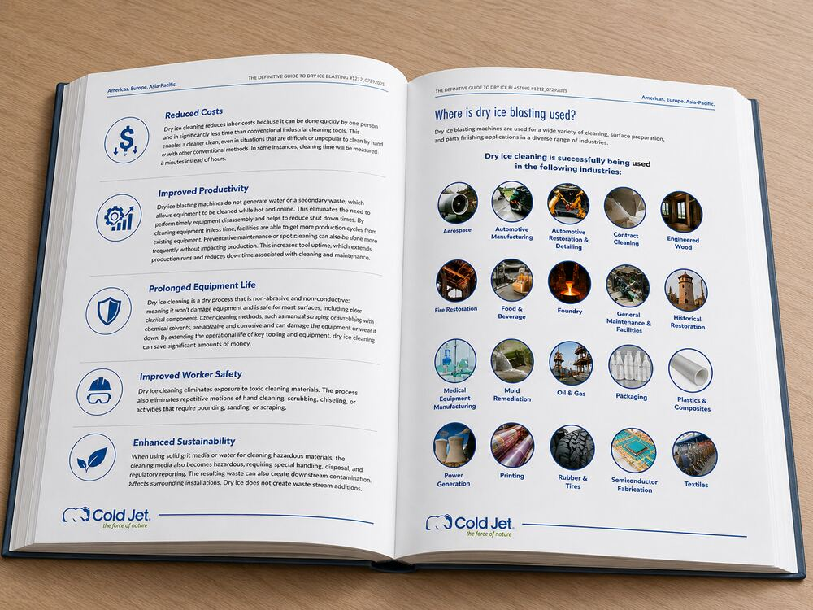
자동차, 식품, 반도체·PCB, 금형, 인쇄, 발전, 조선 등 산업별로 어떤 문제를 해결하는지 설명합니다.
자세히 보기 →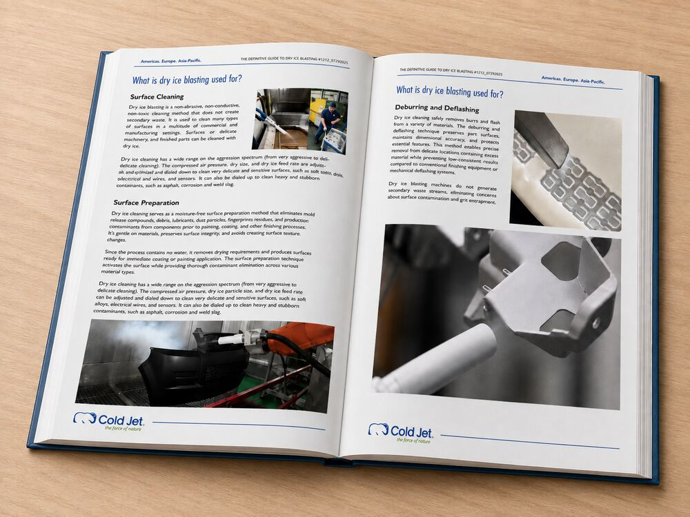
이물질 제거, 몰드 클리닝, 탈청, 도장 전처리 등 작업 유형별 적용 방법을 안내합니다.
자세히 보기 →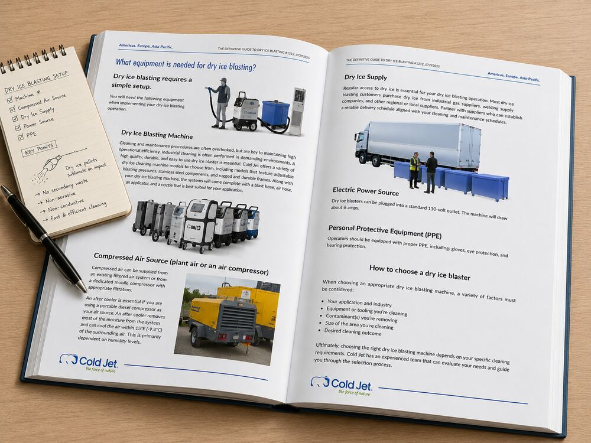
도입 전 검토사항부터 설치 준비, 운영 체크리스트까지 순서대로 안내합니다.
자세히 보기 →현장 상황에 맞는 가장 정확한 답변을 담당자가 안내해 드립니다.